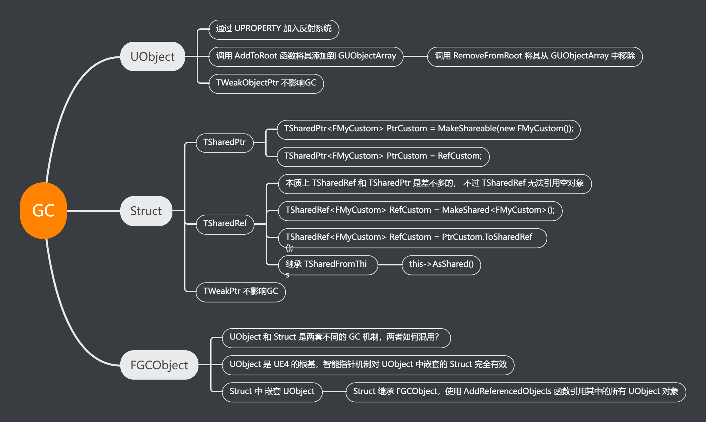

UE4的垃圾回收系统#
追踪式GC
- 标记阶段：从根结点集合开始递归的标记所有可达对象。
- 清扫阶段：遍历所有对象，将没有标记为可达的对象回收，并清理标记位。
注意
- UObject类型的变量，即使是static，默认也会被GC掉。
- 防止UObject对象被GC掉，就要保持对其引用

1、UPROPERTY#
UPROPERTY()
class UPaperTileMap* AssetToRename;
UPROPERTY()
TMap<UCompositingElementInput*, ECompPassConstructionType>
UserConstructedInputs;
2、AddToRoot#
m_sInstance = NewObject<T>();
m_sInstance->AddToRoot();
注意
释放的时候需要调用 m_sInstance->RemoveFromRoot();
3、TWeakObjectPtr#
注意
弱引用，不影响变量的 GC
4、TSharedPtr#
共享指针
- 共享指针，类似C++标准库的共享智能指针，用于自定义的结构体。
- TSharedPtr
Test = MakeShareable(new FTest()); - 不能用于UObject对象(TWeakPtr倒是可以用于UObject), 因为UObject有一套专用的GC规则。
class MYPROJECT2_API FTest
{
public:
FTest();
~FTest();
};
#include "FTest.h"
FTest::FTest()
{
UE_LOG(LogTemp, Warning, TEXT("1111FTest Constrction"));
}
FTest::~FTest()
{
UE_LOG(LogTemp, Warning, TEXT("2222FTest Deconstrction"));
}
UCLASS()
class MYPROJECT2_API ATestActor : public AActor
{
GENERATED_BODY()
public:
// Sets default values for this actor's properties
ATestActor();
TSharedPtr<FTest> Test;
protected:
// Called when the game starts or when spawned
virtual void BeginPlay() override;
}
// Called when the game starts or when spawned
void ATestActor::BeginPlay()
{
Super::BeginPlay();
Test = MakeShareable(new FTest());
}
5、FGCObject#
如何混用
- 已知 UObject 类通过 NewObject 创建并自动 GC
- 非 UObject 类通过 MakeShareable 来创建 TSharedPtr 来自动 GC
- 而 非 UObject 类中出现 UObject 变量怎么办呢？
FGCObject
UE4 提供了 FGCObject，非 UObject 类可以继承 FGCObject，然后通过 AddReferencedObjects 函数对 UObject 对象添加引用。
#include "GCObject.h"
class UCameraAnim;
/**
*
*/
class MYPROJECT2_API FTest :public FGCObject
{
public:
FTest();
~FTest();
UCameraAnim* CameraAnim;
protected:
virtual void AddReferencedObjects(FReferenceCollector& Collector) override
{
Collector.AddReferencedObject(CameraAnim);
}
};
6、TSharedRef#
共享引用
本质上共享引用(TSharedRef)和共享指针(TSharedPtr)是差不多的，一样是用于非UObject体系的对象，不过 TSharedRef 和 TSharedPtr 的不同在于共享引用无法引用空对象，编译直接报错。TSharedRef连 “IsValid” 判断是否非空都没有，强逼你使用必定是有效的引用。所以在 UE4 的 SWidget 中大量使用 TSharedRef
//正确的声明定义
TSharedRef<FMyCustom> MyCustom = MakeShared<FMyCustom>();
//错误的声明定义
//TSharedRef没有空引用，应该持有的对象必须是有效的
//TSharedRef<FMyCustom> MyCustom;
//TSharedRef<FMyCustom> MyCustom = nullptr;
//TSharedPtr转为TSharedRef
TSharedPtr<FMyCustom> MySharedPtr = MakeShareable(new FMyCustom);
TSharedRef<FMyCustom> MySharedRef = MySharedPtr.ToSharedRef();
// TSharedRef可以转化为TSharedPtr， 直接等于就可以了
TSharedRef<FMyCustom> RefCustom = MakeShared<FMyCustom>();
TSharedPtr<FMyCustom> PtrCustom = RefCustom;
TSharedFromThis#
TSharedFromThis
一个普通的结构体继承 TSharedFromThis，就可以拥有 AsShared 函数让普通的结构体对象转为 TSharedRef, 像 SWidget 这个类本身就使用了 TSharedFromThis。
FMyCustom MyCustom;
TSharedRef<FMyCustom> FMyCustomRef = MyCustom.AsShared();
7、TWeakPtr#
TWeakPtr
- 上面说到了 TWeakObjectPtr，专门用于UObject, 相应的普通结构体也有弱指针 TWeakPtr, 能够访问一个非UObject对象，但又不影响 GC。
- 一般来说通过 TWeakPtr 来访问其持有的对象，先是用 Pin() 转换为 TSharedPtr 指针，判断对象是否有效后，再访问
struct FMyCustom
{
int a = 1;
FMyCustom()
{
UE_LOG(LogTemp, Error, TEXT("destruct a = %d"), a);
}
~FMyCustom()
{
UE_LOG(LogTemp, Error, TEXT("undestruct a = %d"), a);
}
};
UCLASS()
class MYPROJECT5_API AMyActor : public AActor
{
public:
TWeakPtr<FMyCustom> WeakCustom;
virtual void BeginPlay() override;
virtual void Tick(float DeltaTime) override;
}
void AMyActor::BeginPlay()
{
Super::BeginPlay();
TSharedPtr<FMyCustom> ShareCustom = MakeShareable(new FMyCustom);
WeakCustom = ShareCustom;
}
// Called every frame
void AMyActor::Tick(float DeltaTime)
{
Super::Tick(DeltaTime);
TSharedPtr<FMyCustom> ShareCustom = WeakCustom.Pin();
if (ShareCustom.IsValid())
{
UE_LOG(LogTemp, Error, TEXT("a = %d"), ShareCustom->a);
}
}
TSharedPtr，TSharedRef, TWeakPtr在容器使用事项
弱指针(TWeakPtr)对象不能作为 Set或者Map 的 Key，因为一个对象被 GC 掉无法通知一个容器的 Key，当然 TWeakPtr 可以作为容器的 Value。
而 TSharedPtr和TSharedRef 既可以当作容器的 Key，也可以作为容器的 Value.
Demo#
/**
* UMyGCObject
*/
UCLASS()
class UMyGCObject : public UObject
{
GENERATED_BODY()
};
/**
* UTestGCObject
*/
UCLASS()
class UTestGCObject : public UObject
{
GENERATED_BODY()
public:
UPROPERTY()
UMyGCObject* Obj;
};
/**
* FTestGCStruct
*/
struct FTestGCStruct
{
public:
UPROPERTY()
UMyGCObject* Obj;
};
/**
* FTestGCUStruct
*/
USTRUCT()
struct FTestGCUStruct
{
GENERATED_BODY()
public:
UPROPERTY()
UMyGCObject* Obj;
};
/**
* ATestGCActor
*/
UCLASS()
class ATestGCActor : public AActor
{
GENERATED_BODY()
public:
//UTestGCObject
UTestGCObject* TestGCObj; //追踪不可达，当GC时会被回收
UPROPERTY()
UTestGCObject* TestGCObj_UPROPERTY; //使用 UPROPERTY 修饰，追踪可达，当GC时不会被回收
//FTestGCStruct
//FTestGCStruct 没有用 USTRUCT() 修饰，所以任何形式的变量都不能使用 UPROPERTY()修饰
//所以以下几种变量均 追踪不可达，当GC时其变量 UMyGCObject* Obj 会被回收
FTestGCStruct TestGCStruct;
FTestGCStruct* TestGCStructP;
TSharedPtr<FTestGCStruct> TestGCStructPtr;
TArray<FTestGCStruct> TestGCStructArray;
TArray<TSharedPtr<FTestGCStruct>> TestGCStructPtrArray;
//FTestGCStruct 使用了 USTRUCT() 修饰
//只有以下 2 种形式的变量，才可以使用 UPROPERTY()修饰
//当使用 UPROPERTY() 修饰时，追踪可达，当GC时其变量 UMyGCObject* Obj 不会被回收
UPROPERTY()
FTestGCUStruct TestGCUStruct_UPROPERTY;
UPROPERTY()
TArray<FTestGCUStruct> TestGCUStructArray_UPROPERTY;
//以下几种变量 追踪不可达，当GC时其变量 UMyGCObject* Obj 会被回收
FTestGCUStruct TestGCUStruct;
FTestGCUStruct* TestGCUStructP;
TSharedPtr<FTestGCUStruct> TestGCUStructPtr;
TArray<FTestGCUStruct> TestGCUStructArray;
TArray<TSharedPtr<FTestGCUStruct>> TestGCUStructPtrArray;
};